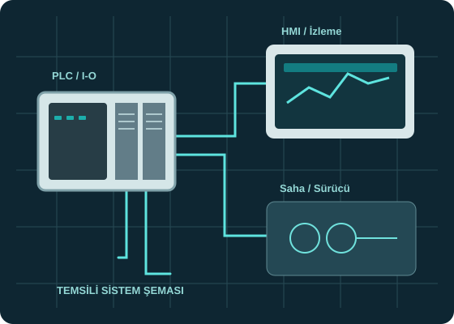

Proje girdileri
Motor listesi, I/O, PLC ve sürücü mimarisi ile saha koşulları değerlendirilir.
PLC ve sürücüler için doğru pano mimarisi, yalnızca malzemelerin yerleştirilmesinden ibaret değildir. Güç dağıtımı, besleme, saha I/O bağlantıları, bakım erişimi ve emniyet fonksiyonları tasarım aşamasında birlikte ele alınmalıdır.
Hizmet bölgesi: Eskişehir, Bursa, Bilecik ve Kütahya

Temsili teknik illüstrasyon; tamamlanmış proje fotoğrafı değildir.
Kapsamı baştan netleştirerek teknik riski ve sürpriz değişiklikleri azaltmayı hedefliyoruz.
Motor listesi, I/O, PLC ve sürücü mimarisi ile saha koşulları değerlendirilir.
Devre korumaları, kablo ve klemens düzeni, güç/otomasyon ayrımı ve dokümantasyon hazırlanır.
Proje kapsamındaki kablolama, I/O ve fonksiyon testleriyle sistem doğrulanır.
Sistem arızalandığında teknisyenin klemens ve cihazları kolay tanıyabilmesi önemlidir. Etiketleme, okunabilir elektrik projeleri, uygun kablo yolları, erişilebilir cihaz yerleşimi ve temiz topraklama yaklaşımı pano sürdürülebilirliğine katkı verir. İmalat/montaj sorumlulukları ve yürürlükteki standartlara uygunluk kapsamını teklif aşamasında açıkça belirleriz.
Çalışmalarımızı Eskişehir merkezimizden planlıyor; Bursa, Bilecik ve Kütahya için yerinde hizmet taleplerini proje kapsamına ve uygunluğa göre değerlendiriyoruz.
Evet. İhtiyacınıza göre proje çizimi, pano revizyonu veya saha devreye alma ayrı kapsamlar olarak ele alınabilir.
Yer, besleme, ısıl koşullar, I/O ve güvenlik altyapısı uygunsa pano genişletme seçenekleri değerlendirilebilir.
Motor listesi, cihaz listesi, I/O sayısı, fotoğraflar, mevcut elektrik projesi ve çalışma koşulları ilk incelemeyi kolaylaştırır.